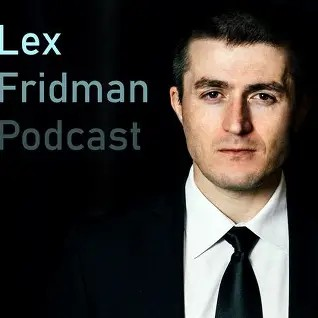

Reseña: Lex Fridman Podcast
Episodio destacado: David Kipping: Civilizaciones Extraterrestres y Mundos Habitables

Este podcast nos lleva en un viaje completo a través de la astronomía y el futuro de la humanidad. Se exploran temas como la búsqueda de exoplanetas habitables, la posibilidad de vida extraterrestre en nuestro propia galaxia, y la tecnología detrás de la exploración espacial, incluyendo a Starship y el Telescopio James Webb. El programa se sumerge en preguntas existenciales sobre el Gran Filtro, la colonización de Marte y la hipótesis de la simulación, concluyendo con reflexiones sobre el sentido de la vida.